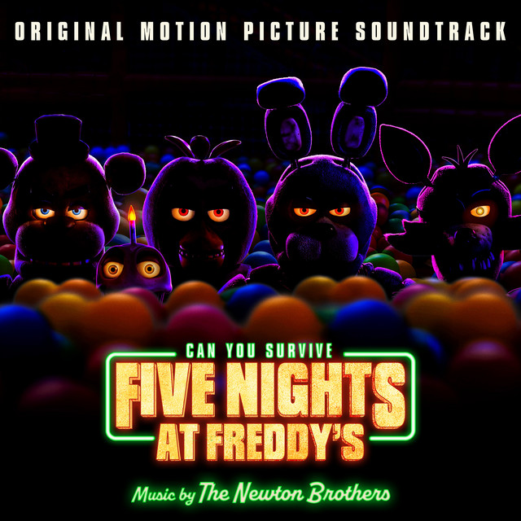

Toby Fox
Aside from being a video game developer,
Toby Fox is a music composer who has composed
and created songs and themes for his own games,
such as UNDERTALE and Deltarune.

The Newton Brothers
John Grush & Taylor Stewart are film score composers.

The Living Tombstone
The Living Tombstone is a band which
would take parts from electronic dance genres
and combine them with rock genre influences.